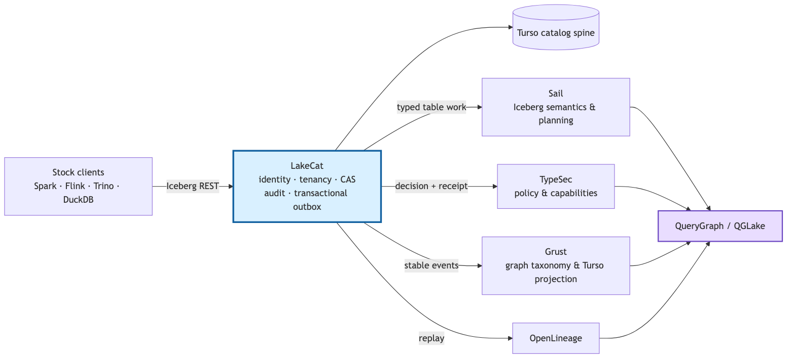

Figure 1. LakeCat keeps the catalog’s authoritative state boundary narrow and composes domain-owned services through typed seams.
LakeCat is a Rust workspace organized around existing trait seams:
CatalogStore, SailCatalogEngine,
GovernanceEngine, CatalogGraphSink, and
LineageSink. Defaults remain safe for embedded tests; real
integrations are activated by explicit feature gates. The principal
components are as follows.
The CatalogStore maintains tenant-scoped namespaces,
tables, views, metadata pointers, policy bindings, idempotency records,
audit entries, and outbox rows. LakeCat prefers the Rust
turso crate for its durable local spine, while an in-memory
implementation supports deterministic unit and integration tests.
Namespace identity is component-safe: wire-level multipart names are
preserved, and durable scope uses a versioned length-prefixed key rather
than ambiguous dot joining.
Table commits validate Iceberg requirements and updates before mutation. The store applies optimistic concurrency to the authoritative pointer and stages state transitions so a failed validation or transaction cannot partially mutate memory or durable state. Initial metadata writes are create-only. Failed commits retry cleanup of an uncommitted metadata object while retaining the original CAS or store error as authoritative.
Sail owns reusable format behavior: metadata models, manifest and metric interpretation, pruning, scan planning, delete handling, and metadata-as-data. LakeCat consumes Sail through a catalog engine interface. This prevents the REST service from developing a second Iceberg implementation. It also allows a governed scan capability to be carried from the HTTP admission point into planning and task fetch without silently reauthorizing reconstructed context.
The governance boundary accepts catalog and read context and returns typed decisions or signed proofs. TypeSec owns policy composition, capabilities, ODRL-derived restrictions, TypeDID envelopes, and authorization semantics. LakeCat records the receipt and the hashes needed to connect the decision to the admitted state transition. Malformed active restrictions fail before Sail, credential issuer, graph, or lineage side effects.
Grust owns graph schema, taxonomy, stable identity, Turso persistence, traversal, and Cypher behavior. LakeCat emits catalog-facing events to this boundary but does not implement a graph database. OpenLineage receives corresponding replayed events for interoperable execution metadata. Stable event identifiers and content hashes make retries observable and testable.
QueryGraph composes the catalog, Sail, TypeSec, Grust, OpenLineage, and semantic interchange formats. Its QGLake workflow independently verifies handoff hashes, replays events, imports the graph, and checks proof-chain continuity. This end-to-end target prevents a component-local “pass” from standing in for a working stack.